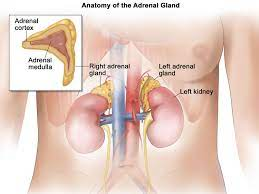

Adrenal incidentaloma.

SYMPTOMS:
- Weight loss or weight gain (especially around the face and abdomen)
-
Purplish skin stretch marks or skin that’s easily bruised
-
Acne
-
Muscle weakness
-
Depression, anxiety, fatigue, and sleep disturbances
-
In women, excess facial and body hair and/or irregular periods
CAUSES
- An adenoma (a non-cancerous tumor in the adrenal glands)
-
Cancer of the adrenal gland or spread of cancer from elsewhere in the body
-
Cysts in or on the adrenal glands
-
Other less common conditions, such as tumors filled with fat and blood cells
DIAGNOSIS
- Your medical history
-
A review of your symptoms
-
A physical exam: a check of your blood pressure, pulse rate, body weight, and other signs
-
Blood and/or urine tests to check hormone levels and to rule out hormone excess
-
Results of genetic tests (rarely)
TREATMENT
- About 85% of adrenal tumors are non-functioning and may not need treatment. Sometimes surgery is needed to remove the tumor, or one or both adrenal glands. Your medical team will decide whether you need surgery based on your type of tumor (benign or cancerous) and whether it is producing hormones. If you have an inherited tumor syndrome, you may need genetic counseling.
-
If you’ve had an adrenal incidentaloma, you may need regular follow-up.